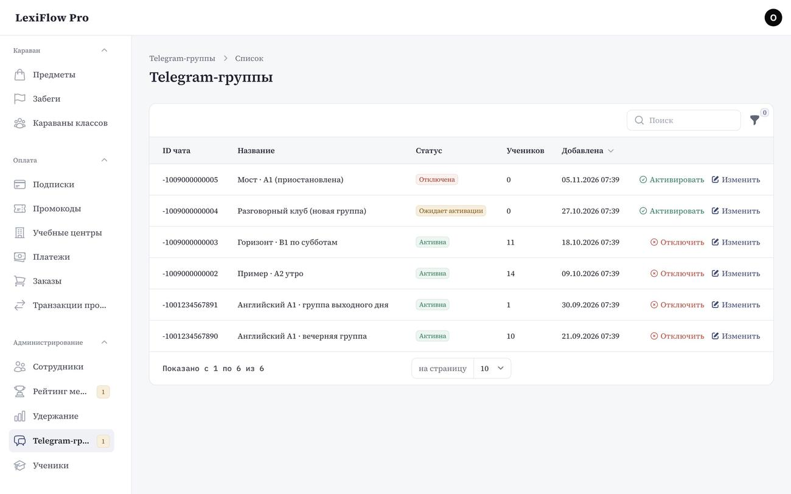
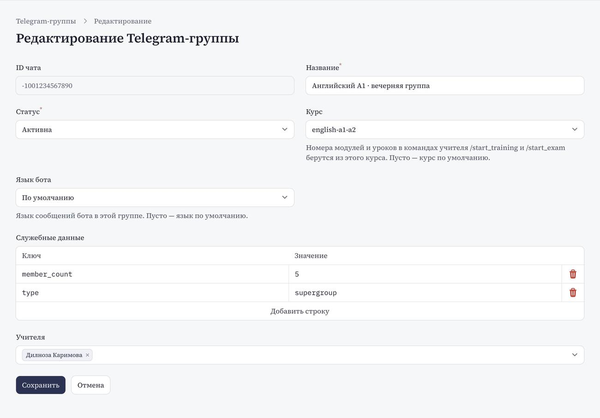

Telegram-группа — чат класса, куда добавлен бот. В группе учитель запускает занятия и экзамены командами бота, а ученики группы могут получать Pro от учебного центра. Раздел Администрирование → Telegram-группы администратор использует, чтобы активировать группы, выбрать им курс и язык бота и назначить учителей. Учитель видит здесь только список своих групп.
Группа появляется в списке сама, когда бота добавляют в чат, со статусом «Ожидает активации». Число рядом с пунктом меню — сколько групп ждут активации.
| Статус | Что значит |
|---|---|
| Ожидает активации | бот в группе, но администратор её ещё не одобрил |
| Активна | группа работает: учитель может проводить занятия и экзамены |
| Отключена | бот не отвечает на команды в этой группе |
Группу, которую учебный центр привязал к себе в кабинете /org, активировать вручную обычно не нужно: если у центра действует подписка, группа активируется сразу при привязке.

Быстро включить или выключить группу без формы можно кнопками Активировать / Отключить в строке списка.

| Поле | Что меняет |
|---|---|
| Название | название группы в панели (из Telegram) |
| Статус | см. таблицу выше |
| Курс | номера модулей и уроков в командах учителя /start_training и /start_exam берутся из этого курса. Два курса могут оба иметь «Модуль 1 · Урок 1» — команда ищет урок только в курсе группы |
| Язык бота | язык сообщений бота в группе, вопросов экзамена и переводов на карточках групповых занятий. Личные сообщения ученикам идут на языке интерфейса каждого ученика |
| Служебные данные | технические пары «ключ — значение» (например, число участников). Без указания разработчиков не меняйте |
| Учителя | кто считается учителем группы: видит её в панели, её учеников и экзамены |
Отключение группы останавливает работу бота в ней для всех учеников. Если группа привязана к учебному центру, её ученики перестанут получать Pro от центра.